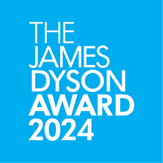
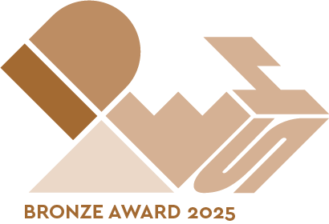

Designed by Jiwon Kim, Jiwon Lee, Kyeongho Park,
Yeuhyun jeong, Seungjun Lee/ IDM+ KAIST


Oxynizer is a non-electric oxygen generator with a universal
hose system and sustainable filter materials. It is easily
connected to various pumps and delivers oxygen to patients
with a range of conditions, from mild breathlessness to
chronic respiratory diseases. Its high compatibility, low
maintenance, and intuitive operation make the Oxynizer a
potential lifesaver for patients in developing countries
with limited medical infrastructure.